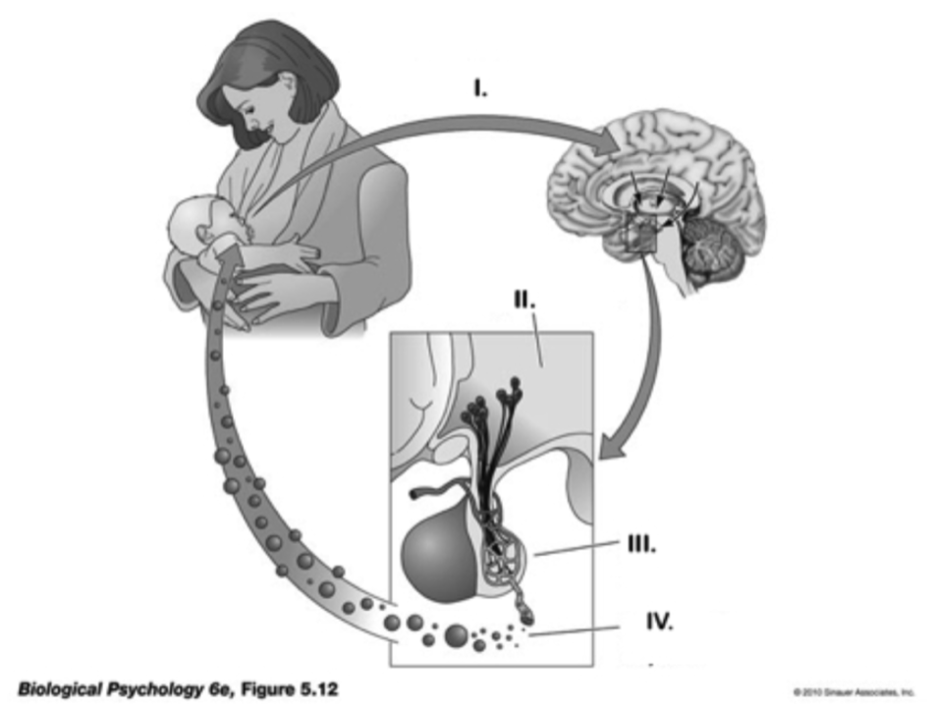

Exam 2
A. Main (40 points)
Answer the following questions.
1. True or False. The primate cerebellum is larger in volume than the cerebral cortex but contains fewer nerve cells than the cerebral cortex.
A. True
B. False
2. Influx of _____ ions into the presynaptic terminal triggers the release of neurotransmitters by means of _____
A. Na+; ion transportation.
B. Cl-; inhibitory postsynaptic potential enhancement.
C. Ca++; exocytosis.
D. K+; Na+/K+ pump activity.
3. This branch of the autonomic nervous system is activated in parallel with the HPA axis during responses to threat or challenge.
A. sympathetic branch.
B. parasymphonic branch
C. vagal branch.
D. adrenergic branch.
Match the hormone to its function.
4. Oxytocin
A. Stress response; increases blood in glucose; anti-inflammatory effect.
B. Uterine contraction; milk release; bonding.
C. Regulates seasonal changes; sexual maturation.
D. Blood vessel constriction; antidiuretic hormone.
5. Cortisol
A. Stress response; increases in blood glucose; anti-inflammatory effect.
B. Uterine contraction; milk release; bonding.
C. Regulates seasonal changes; sexual maturation.
D. Blood vessel constriction; antidiuretic hormone.
6. Melatonin
A. Stress response; increases in blood glucose; anti-inflammatory effect.
B. Uterine contraction; milk release; bonding.
C. Regulates seasonal changes, circadian rhythm.
D. Blood vessel constriction; antidiuretic hormone.
Answer the following questions.
7. Botulinum toxin (botox) blocks the release of acetylcholine (ACh) from presynaptic terminals. In large quantities, this can be _____ because it _____.
A. good; speeds the conduction of action potentials
B. bad; blocks communication to muscle fibers
C. good; accelerates K+ flow
D. bad; affects the size and number of presynaptic IPSPs
8. _____ is a kind of _____ brain imaging method used to study axon fiber (white matter) tracts.
A. Structural MRI; structural
B. Positron Emission Tomography (PET); functional
C. Magnetoencephalography; functional
D. Diffusion tensor imaging (DTI); structural
9. The enzyme AChE contributes to the _____ of _____.
A. Breakdown and inactivation; acetylcholine
B. Breakdown and inactivation; dopamine, norepinephrine, and epinephrine
C. Postsynaptic reuptake; serotonin
D. Increase in monoamine levels; GABA-releasing neuron
10. This neurotransmitter is released by motor neurons onto skeletal muscle.
A. GABA
B. Serotonin
C. Acetylcholine
D. Glutamate
11. Selective serotonin reuptake inhibitors (SSRIs) like Prozac act to _____ neurotransmitter concentrations.
A. reduce
B. eliminate
C. increase
D. recycle
Please put in their proper order the steps that lead to synaptic communication between neurons. Begin with the presynaptic cell.
12. Step 1
A. Voltage-gated Ca++ channels open.
B. Action potential propagates down the axon to the axon terminal.
C. Ca++ entry initiates exocytosis of neurotransmitter.
D. Ligand-gated receptors bind neurotransmitter and activate channels in the postsynaptic cell.
E. Neurotransmitter diffuses across the synaptic cleft.
13. Step 2
A. Voltage-gated Ca++ channels open.
B. Action potential propagates down the axon to the axon terminal.
C. Ca++ initiates exocytosis of neurotransmitter.
D. Ligand-gated receptors bind neurotransmitter and activate channels in the postsynaptic cell.
E. Neurotransmitter diffuses across synaptic cleft.
14. Step 3
A. Voltage-gated Ca++ channels open.
B. Action potential propagates down the axon to the axon terminal.
C. Ca++ initiates exocytosis of neurotransmitter.
D. Ligand-gated receptors bind neurotransmitter and activate channels in the postsynaptic cell.
E. Neurotransmitter diffuses across synaptic cleft.
15. Step 4
A. Voltage-gated Ca++ channels open.
B. Action potential propagates down the axon to the axon terminal.
C. Ca++ initiates exocytosis of neurotransmitter.
D. Ligand-gated receptors bind neurotransmitter and activate channels in the postsynaptic cell.
E. Neurotransmitter diffuses across synaptic cleft.
16. Step 5
A. Voltage-gated Ca++ channels open.
B. Action potential propagates down the axon to the axon terminal.
C. Ca++ initiates exocytosis of neurotransmitter.
D. Ligand-gated receptors bind neurotransmitter and activate channels in the post- synaptic cell.
E. Neurotransmitter diffuses across synaptic cleft.
Answer the following questions.
17. The meso-limbo-cortical projection from the _____ in the midbrain releases the neurotransmitter _____. It is part of the brain’s ‘reward’ circuit.
A. ventral tegmental area; dopamine
B. raphe nucleus; NE
C. superior colliculus; glutamate
D. thalamus; GABA
18. The central sulcus divides the _____.
A. left hemisphere from the right
B. frontal lobe from the parietal lobe
C. frontal lobe from the occipital lobe
D. corpus callosum from the anterior commissure
19. This glial cell type produces myelin in the peripheral nervous system.
A. Pyramidal cells.
B. Schwann cells.
C. Oligodendrocytes
D. Microglia.
20. _____ receptors contain their own ion channel; _____ do not.
A. Ionotropic; metabotropic
B. Metabotropic; ionotropic
C. GABA; glutamate
D. Dopamine; serotonin
21. _____ is the primary excitatory neurotransmitter in the CNS; _____ is the primary neurotransmitter of CNS output.
A. GABA; glutamate.
B. Glutamate; GABA.
C. Glutamate; acetylcholine.
D. Acetylcholine; glutamate.
22. Hormonal action _____ than neuronal action.
A. is faster-acting
B. is more specific in its effects
C. is slower-acting
D. involves greater voluntary control
23. Opening a channel permeable to Na+ in a neuron at its resting potential would have a/an _____ effect.
A. Excitatory
B. Inhibitory
C. Modulatory
D. Ca++ activating
Match the endocrine structure with the function.
24. Hypothalamus
A. Regulates digestive processes via dopamine release.
B. Responds to adrenocorticotropic hormone (ACTH) by releasing cortisol.
C. Releases NE and epinephrine.
D. Controls hormone secretions into and by the pituitary
25. Pineal gland
A. Regulates circadian rhythms via melatonin release.
B. Responds to adrenocorticotropic hormone (ACTH) by releasing cortisol.
C. Releases NE and epinephrine.
D. Controls hormone secretions into and by the pituitary.
Answer the following questions.
26. Glucocorticoid hormones (e.g., cortisol) serve all the following functions EXCEPT:
A. Stimulating uterine and vaginal contractions during childbirth.
B. Increasing glucose levels.
C. Inhibiting inflammation.
D. Suppressing immune responses.
27. Animals with complex nervous systems emerged _____.
A. about 4.5 billion years ago.
B. about 13.7 billion years ago.
C. 500-600 million years ago.
D. within the last 10,000 years.
28. Gap junctions support _____ between cells.
A. direct electrical coupling
B. chemical communication
C. slow communication
D. hormonal signaling
29. The release of glutamate onto an ionotropic receptor on a neuron’s dendrite produces an _____.
A. inhibitory postsynaptic potential (IPSP)
B. electrochemical postsynaptic potential (EPSP)
C. inwardly-driven postsynaptic potential (IPSP)
D. excitatory postsynaptic potential (EPSP)
30. Both Parkinson’s Disease and schizophrenia have been linked to disturbances in _____ neurotransmitter systems.
A. dopamine
B. GABA
C. acetylcholine
D. serotonin
31. True or False. There are many details about how evolution occurred that are not yet well established.
A. True.
B. False.
32. The human _____ has about 16 billion neurons, _____ than any other animal, including animals with larger brains.
A. cerebellum; fewer
B. cerebral cortex; fewer
C. cerebral cortex; more
D. cerebellum; more
33. All of the following are characteristics of the vertebrate central nervous system EXCEPT.
A. radial symmetry.
B. segmentation.
C. encephalization.
D. identifiable forebrain, midbrain, and hindbrain components.
34. Brain mass _____ body mass in vertebrates.
A. increases with
B. decreases with
C. has no relationship to
D. can’t be measured like
Match the Roman numeral in the figures below, to the process and structures in the hormonal action cycle the figure depicts.
35. I
A. Posterior pituitary receives impulses from hypothalamus.
B. Sensory nerve impulses project to the brain.
C. Release of oxytocin into blood stream.
D. Hypothalamus responds to sensory input.
36. II
A. Posterior pituitary receives impulses from hypothalamus.
B. Sensory nerve impulses project to the brain.
C. Release of oxytocin into blood stream.
D. Hypothalamus responds to sensory input.
37. III
A. Posterior pituitary receives impulses from hypothalamus.
B. Sensory nerve impulses project to the brain.
C. Release of oxytocin into blood stream.
D. Hypothalamus responds to sensory input.
38. IV
A. Posterior pituitary receives impulses from hypothalamus.
B. Sensory nerve impulses project to the brain.
C. Release of oxytocin into blood stream.
D. Hypothalamus responds to sensory input.

Answer the following questions.
39. Which of the following statements are inconsistent with the theory of evolution.
A. Organisms existed in the distant past that no longer exist today.
B. Organisms differ in the extent to which they survive and reproduce successfully.
C. The history of life on Earth is too short for new species to have evolved.
D. Offspring inherit many traits from their parents.
40. All of these animals except _____, have relatively large brains for their body sizes and correspondingly high cognitive capacities.
A. chimpanzees.
B. mice.
C. humans.
D. corvids (crows and ravens).
B. Bonus (5 points)
- The hippocampus is located deep within which lobe of the cerebral cortex?
A. Temporal.
B. Frontal.
C. Parietal.
D. Occipital.
- Histamine is one of the _____ group of neurotransmitters. It is released by the _____.
A. monoamine; hippocampus
B. monoamine; hypothalamus
C. amino acid; midbrain
D. peptide; amygdala
- The 10th cranial (Xth) or vagus nerve connects to the _____ branch of the autonomic nervous system. Its neurons tend to slow heart rate and activate digestion when stimulated.
A. parasympathetic
B. sympathetic
C. enteric
D. somatic
- Corticotropin Releasing Hormone (CRH) is released by the hypothalamus into the _____, the first step in the multi-step process leading to the release of cortisol into the blood stream by the adrenal cortex.
A. amygdala
B. cerebrospinal fluid (CSF)
C. anterior pituitary
D. adrenal medulla
- The neural tube forms at about _____ post-conception in human embryos. This is commonly considered the starting point for the development of the nervous system.
A. 37 weeks
B. 6 months
C. 3-4 weeks
D. 2 years